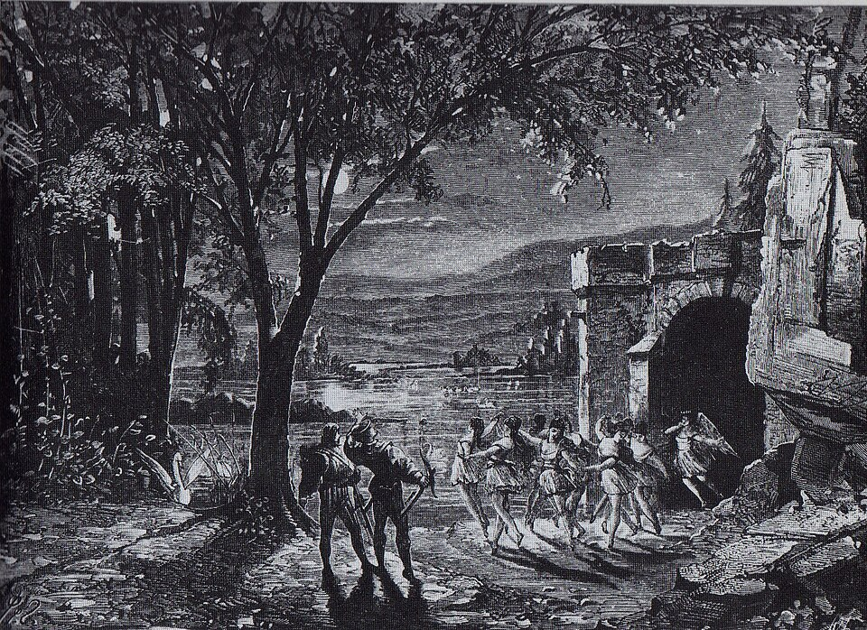

Opus 20, is a ballet composed by Pyotr Ilyich Tchaikovsky between August 1875 and April 1876. The original production premiered at the Bolshoi Theatre in Moscow on 4 March 1877 (20 February Old Style), with choreography by Julius Reisinger. The ballet, initially conceived in two acts, is based on Russian and German folk tales and tells the story of Princess Odette, who is transformed into a swan by the sorcerer Von Rothbart.
The original libretto’s authorship and exact origin are unclear. It may draw from Russian and German folk tales, including Johann Karl August Musäus’s 1784 story The Stolen Veil, linked to the Swan Maiden legend, though similarities to the ballet’s plot are limited. The story likely developed through ballet traditions rather than one author. Critics find elements from legends worldwide and common German settings in 19th-century ballets. Siegfried resembles Albrecht from Giselle, both betrayed by deception. The ball to choose a bride appears in La fille du Danube. Swan maidens echo wilis and sylphs from Romantic ballets and connect to Daniel Auber’s opera Le lac des fées.
